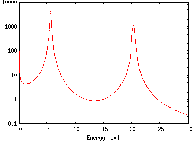
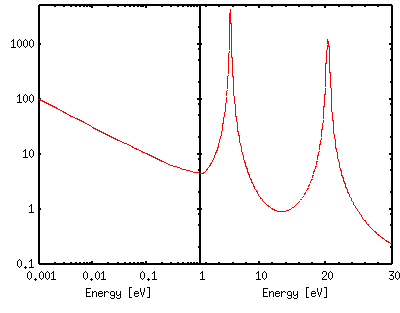

<!DOCTYPE HTML PUBLIC "-//W3C//DTD HTML 4.01 Transitional//EN">
<html lang="ja">
<head>
<title> gnuplot / plot (6) </title>
<!-- Generated 2003/ 2/17 -->
<!-- $Id: plot6.html,v 1.7 2004/12/19 09:23:44 kawano Exp $ -->
<meta http-equiv="content-type" content="text/html;charset=iso-2022-jp">
<link rel="stylesheet" href="style-new.css" type="text/css">
</head>
<body>

<table width="100%" border="0" cellpadding="0" cellspacing="0">
<tr><td bgcolor="#cccc90" width="320">
    <div align="left">
    <a href="index.html">
    
    </a></div></td>
    <td bgcolor="#cccc90">
      <div align="center"><h3> - not so Frequently Asked Questions - </h3> </div>
      <div class="update"> update 2004/9/5 </div>
    </td>
</tr>
<tr><td bgcolor="#fae8ba"></td>
    <td bgcolor="#fae8ba"><div class="navi"> 
<a href="index.html">           HOME </a> |
<a href="intro/index.html">     INTRODUCTION </a> |
<a href="general.html">         INFORMATION </a> |
<a href="gallery/index.html">   GALLERY </a> |
<a href="plot6-e.html">         ENGLISH </a>
</div></td></tr>
</table>
<hr class="topsep">


<table width="100%" border="0" cellpadding="0" cellspacing="0">
<tr><td id="menu">
 <p> not so FAQ</p>
  <ul>
    <li><a href="legend.html">      $BK^Nc(B(Legend) </a>
    <li><a href="tics.html">        $BL\@9(B(Tics) </a>
    <li><a href="label.html">       $B%i%Y%k(B(Label) </a>
    <li><a href="plot1.html">       2$B<!85%W%m%C%H(B </a>
    <ul>
      <li><a href="plot1.html#5.1">
           $B0lDj$NBg$-$5(B </a>
      <li><a href="plot1.html#5.2">
           $B:81&N>J}$N(BY$B<4(B </a>
      <li><a href="plot1.html#5.3">
           $B<4$r>C$9(B </a>
      <li><a href="plot1.html#5.4">
           $B=D2#Hf$N8GDj$5$l$??^(B </a>
      <li><a href="plot2.html#5.5">
           $B%<%m<4(B </a>
      <li><a href="plot2.html#5.6">
           $B8m:9K@$N2#@~(B </a>
      <li><a href="plot2.html#5.7">
           $BJ8;z$rBg$-$/(B</a>
      <li><a href="plot2.html#5.8">
           $B6J@~$GJd4V(B</a>
      <li><a href="plot2.html#5.9">
           $BOH@~>e%G!<%?E@$r>C$9(B </a>
      <li><a href="plot3.html#5.10">
           $BJ#?t$N%0%i%U(B </a>
      <li><a href="plot3.html#5.11">
           $B3J;R(B </a>
      <li><a href="plot4.html#5.12">
           $BJ#?t$N<4(B </a>
      <li><a href="plot4.html#5.13">
           $BG$0U$N3J;R(B </a>
      <li><a href="plot5.html#5.14">
           $B?^Cf$N?^(B </a>
      <li><a href="plot5.html#5.15">
           $BK@%0%i%U(B </a>
      <li><a href="plot6.html#5.16">
           2$B$D$N?^$rJB$Y$k!%(B</a>
      <li><a href="plot7.html#5.17">
           $B@55,3NN(<4(B </a>
      <li><a href="plot7.html#5.18">
           $B%G!<%?CM$r0u:~(B </a>
    </ul>
    <li><a href="plot3d.html">      3$B<!85%W%m%C%H(B </a>
    <li><a href="polar.html">       $B6K:BI8%W%m%C%H(B </a>
    <li><a href="parametric.html">  $BG^2pJQ?tI=<((B </a>
    <li><a href="datafile.html">    $B%G!<%?%U%!%$%k$N?tCM(B </a>
    <li><a href="postproc.html">    $B?^$rIA$$$?$=$N8e$O(B</a>
    <li><a href="misc1.html">       $B$=$NB>(B </a>
  </ul>
 <br>
</td>


<td id="content">


<h1><a name="top"> 2$B<!85%W%m%C%H$N$"$l$3$l(B ($B$=$N(B6) </a></h1>

<div align="center">
<a href="plot1.html"> 1 </a> | 
<a href="plot2.html"> 2 </a> | 
<a href="plot3.html"> 3 </a> | 
<a href="plot4.html"> 4 </a> | 
<a href="plot5.html"> 5 </a> | 
<a href="plot6.html"> 6 </a> | 
<a href="plot7.html"> 7 </a>
</div>

<h2><a name="5.16">$BI=<(J}K!$N0[$J$k(B2$B$D$N?^$r2#$^$?$O=D$KJB$Y$k!%(B</a></h2>

<p> $BF1$8%G!<%?$N?^$r!$I=<(J}K!$rJQ$($F!$2#$^$?$O=D$KJB$Y$kJ}K!$r>R2p$7$^$9!%(B
$B<!$N$h$&$J>l9g$K!$$3$N$h$&$JI=<($,Lr$KN)$A$^$9!%(B</p>
<ul>
 <li> <a href="plot6.html#side"> $BF1$8%G!<%?$rI=<(%9%1!<%k$rJQ$($F2#$KJB$Y$k!%(B</a>
    <ul>
      <li> X$B$N$"$kFCDj$NHO0O$r0z$-?-$P$7$FI=<($7$?$$$H$-!%Nc$($P!$(BX$B$NCM(B
            $B$,>.$5$$ItJ,$@$1$rBP?tI=<($7$F3HBg$7!$2#$KJB$Y$F(B1$BKg$N?^$H$9(B
            $B$k!%(B
    </ul>
 <li> <a href="plot6.html#atop"> 2$B$D$N;wDL$C$?%G!<%?$r@dBPCM$HHf$GHf3S$9$k!%(B</a>
    <ul>
       <li> Y$BCM$,Hs>o$K@\6a$7$?(B2$B$D$N%G!<%?$r=E$M$F%W%m%C%H$9$k$H!$(B2$B$D$N(B
            $B%0%i%U$O=E$J$C$F$7$^$$H=JL$,$G$-$J$/$J$j$^$9!%(B2$B$D$N%G!<%?$,(B
            $BHs>o$K;w$F$$$k$H$$$&;v$r<($7$?$$$@$1$J$i!$=E$J$C$F$7$^$&$N$O!$(B
            $B$5$[$I0-$$$3$H$G$O$"$j$^$;$s!%$?$@!$$I$NDxEY=E$J$C$F$$$k$N$+(B
            $B$rDjNLE*$K<($7$?$$$N$J$i!$$=$l$i$NHf$r$H$j!$(Bratio=1$B$+$i$I$l(B
            $B$@$1N%$l$F$$$k$+$rI=<($9$k$HNI$$$G$9!%$3$3$G$O!$#1$D$N?^$r>e(B
            $B2<$KJ,$1!$>eH>J,$K(B2$B$D$N%G!<%?$r@dBPCM$GI=<($7!$2<It$K$=$l$i(B
            $B$NHf$r%W%m%C%H$7$^$9!%(B
    </ul>
</ul>


<hr width="50%">

<div class="top"><a href="plot6.html#top"></a></div>
<h2><a name="side">$BF1$8%G!<%?$rI=<(%9%1!<%k$rJQ$($F2#$KJB$Y$k!%(B</a></h2>



<p> $B:8$N$h$&$J%G!<%?$,$"$k$H$7$^$9!%$3$3$G$NI=<(HO0O$O!$(B[0:30]$B$H$J$C$F$$(B
     $B$^$9$,!$(BX$B$,(B0$B$K6a$$>l=j$K0UL#$,$"$j!$$3$3$r$h$j>\:Y$K8+$;$?$$>l9g$,(B
     $B$"$j$^$9!%(B2$B$D$N?^$r0[$J$k%9%1!<%k$GIA$1$PNI$$$N$G$9$,!$$3$l$r(B1$B$D$N(B
     $B?^$K$^$H$a$kJ}K!$r9M$($^$9!%$^$:!$(BX$B$,(B1$B0J2<$NNN0h$rBP?tI=<($7$^$9!%(B</p>
<br clear="all">

<pre class="sample">
gnuplot&gt; set log xy
gnuplot&gt; set xrange [ 0.001 : 1 ]
gnuplot&gt; set yrange [ 0.1 : 5000 ]
gnuplot&gt; set xlabel "Energy [eV]"
</pre>

<p> X$B$,(B[1:30]$B$NNN0h$O(Blinear scale$B$GI=<($7!$(B1$B0J2<$NBP?tI=<($N?^$N2#$K(B
     <tt>multiplot</tt>$B$r;H$C$FJB$Y$^$9!%:81&$N?^$r$T$C$?$j$H$/$C$D$1$k(B
     $B$?$a$K!$:8B&$G$O(B<tt>rmargin</tt>$B$r%<%m$K$7!$1&$N?^$G$O(B
     <tt>lmargin</tt>$B$r%<%m$K$7$^$9!%(B2$B$D$N?^$N2#I}$rH>J,$K$7$F$*$-!$(B
     <tt>set origin</tt>$B$rMQ$$$F1&$N?^$r(B0.5$B$@$11&$K0\F0$7$^$9!%(B</p>

<p> $B:8B&$N?^$K$O(BY$BL\@9$rF~$l$k$?$a!$(B<tt> set lmargin 10 </tt>$B$H$7$F(BY$B<4$N(B
     $B?t;z$r=q$/(B10$BJ8;zJ,$NNN0h$r3NJ]$7$F$$$^$9$,!$1&B&$N?^$K$O?t;z$rF~$l(B
     $B$J$$$N$G(B<tt>lmargin</tt>$B$r%<%m$K$7$^$9!%$^$?(B<a href="tics.html#3.4">
     $B?t;z$r>C$9(B</a>$B$?$a$K(B<tt> set format ""</tt>$B$r;XDj$7$^$9!%(B</p>

<pre class="sample">
gnuplot&gt; set multiplot
multiplot&gt; set size 0.5,1
multiplot&gt; set origin 0.0,0.0
multiplot&gt; set lmargin 10
multiplot&gt; set rmargin 0
multiplot&gt; plot "calc.dat" u 1:2 w l
multiplot&gt; set origin 0.5,0.0
multiplot&gt; set format y ""
multiplot&gt; set lmargin 0
multiplot&gt; set rmargin 2
multiplot&gt; set nolog x
multiplot&gt; set xrange [1:30]
multiplot&gt; set xtic 0,10
multiplot&gt; set mxtic 5
multiplot&gt; plot "calc.dat" u 1:2 w l
multiplot&gt; set nomultiplot
gnuplot&gt;
</pre>



<p> $B:8B&$H1&B&$N%9%1!<%k$,0c$&$3$H$rL@3N$K$9$k$?$a$K!$(BX$B<4$K$O(Bminor tics 
     $B$r$$$l$F$*$/$Y$-$G$9!%$^$?!$7R$.L\$G$N(BX$B$NL\@9$N?tCM$,=E$J$C$F$7$^$o(B
     $B$J$$$h$&$K!$1&$N?^$G$O(B<tt>set xtics 0,10</tt>($B=i4|CM(B0$B!$A}J,(B10)$B$H$7(B
     $B$F(BX=1$B$N$H$3$m$KL\@9$,F~$i$J$$$h$&$K$7$^$7$?!%(B</p>

<p> $B<B$O!$$3$N%G!<%?$O(BX$B$,>.$5$$>l9g$K(Blog-log$B$GD>@~$K$J$k$3$H$,J,$+$C$F$$(B
     $B$^$9!%>e$N?^$HHf3S$9$k$H$o$+$k$h$&$K!$I=<(NN0h$r(B2$B$D$K$o$1$k$3$H$G!$(B
     $B$3$N$h$&$J%G!<%?$NFCD'$rC<E*$KI=8=$9$k$3$H$,2DG=$K$J$j$^$9!%(B</p>
<br clear="all">

<p> $B$3$NNc$G$O(BX$B<4L>$,(B2$B$DI=<($5$l$^$9$,!$(B2$B$D$N?^$N??Cf6aJU$K(B1$B$D$@$1I=<($5(B
     $B$;$k$3$H$b$G$-$^$9!%:8$N?^$G$O(B <tt> set xlabel ""</tt>$B$N$h$&$K<4L>(B
     $B$r>C$7$F$*$-!$1&B&$N<4L>$r(B<tt> set xlabel "Energy [eV]" -20,0</tt>
     $B$N$h$&$K:8$K$:$i$7$^$9!%$3$N;~!$N>J}$N?^$G!$(B<tt> set bmargin 5</tt>
     $B$N$h$&$K2<It$N%^!<%8%s$rL@<($7$F$*$+$J$$$H!$<4L>$r>C$7$?J}$N?^$N=D(B
     $B$ND9$5$,JQ$o$C$F$7$^$$$^$9!%(B</p>


<hr width="50%">
<div class="top"><a href="plot6.html#top"></a></div>
<h2><a name="atop">2$B$D$N;wDL$C$?%G!<%?$r@dBPCM$HHf$GHf3S$9$k!%(B</a></h2>

<p> $BHs>o$K;wDL$C$?(B2$B$D$N%G!<%?$rHf3S8!F$$9$k$K$O!$@dBPCM$G$NHf3S$NB>$K$=(B
     $B$l$i$NHf$r<h$C$?$b$N$r%W%m%C%H$9$k$N$,8z2LE*$G$9!%F1$8(BX$B:BI8$G$N(BY$BCM(B
     $B$NHf$J$N$G!$:#EY$O>e2<$K?^$r=E$M$F$_$^$9!%@dBPCM$G$NHf3S$OBP?tI=<(!$(B
     $BHf$ODL>o$NL\@9$r;H$$$^$9!%(B</p>

<p> 2$B$D$N%G!<%?$N(BX$B:BI8$rB7$($F$*$+$J$$$H!$Hf$r7W;;$9$k$3$H$O$G$-$^$;$s$N(B
     $B$G!$%G!<%?%U%!%$%k$K$O!$(B1$B%+%i%`L\$K(BX$B:BI8!$(B2$B%+%i%`$,:G=i$N%G!<%?$N(BY
     $B:BI8!$(B3$B%+%i%`L\$,(B2$BHVL\$N%G!<%?$N(BY$B:BI8$,F~$C$F$$$k$b$N$H$7$^$9!%(B</p>

<p> $B:G=i$K@_Dj$9$k$N$O!$>e2<$N?^$K6&DL$J(BX$B<44X78$N%Q%i%a!<%?$G$9!%$3$3$G(B
     $B$O!$(B[0.01:30]$B$NHO0O$rBP?tI=<($rMQ$$$F%W%m%C%H$7$^$9!%>e2<$N?^$NBg$-(B
     $B$5$r$=$m$($k$?$a$K!$(Bleft$B$H(Bright$B$N%^!<%8%s$rL@<($7$F$$$^$9!%(B</p>

<pre class="sample">
gnuplot&gt; set xrange [ 0.01 : 30 ]
gnuplot&gt; set nokey
gnuplot&gt; set log x
gnuplot&gt; set xtics 10
gnuplot&gt; set mxtics 10
gnuplot&gt; set lmargin 10
gnuplot&gt; set rmargin 2
</pre>

<p> $B$^$:2<B&$N?^$r:n$j$^$9!%2<$K$O(B2$B$D$N%G!<%?$NHf$r$H$C$?$b$N$r!$=D%5%$(B
     $B%:$r(B0.4$B$K=L>.$7$FI=<($7$^$9!%(BY$B<4$NHO0O$O(B0.5$B$+$i(B1.5$B$H$7!$L\@9$O(B0.6$B$+(B
     $B$i(B0.2$B9o$_$G(B1.4$B$^$GF~$l$^$9!%(BX$B<4L>$O2<$N?^$KF~$l$k$N$G!$(B<tt> set
     bmargin </tt>$B$G<4L>$N%9%Z!<%9$r3NJ]$7$^$9!%$^$?!$>e$N?^$H@\?($5$;$k(B
     $B$?$a$K!$(B<tt> set tmargin 0 </tt>$B$G>eIt$NM>Gr$rL5$/$7$^$9!%(B2$B$D$N%G!<(B
     $B%?$O(B2,3$B%+%i%`$K$"$k$N$G!$$=$NHf$r%W%m%C%H$9$k$K$O(B<tt> plot
     1:($2/$3)</tt> $B$H$J$j$^$9!%(BY=1$B$rF~$l$F$*$/$H!$Hf$N%G!<%?$O$h$jFI$_(B
     $B$d$9$/$J$j$^$9!%(B</p>

<pre class="sample">
gnuplot&gt; set multiplot
multiplot&gt; set yrange [ 0.5 : 1.5 ]
multiplot&gt; set ytic 0.6,0.2,1.4
multiplot&gt; set ylabel "Ratio"
multiplot&gt; set size 1,0.4
multiplot&gt; set xlabel "Energy [eV]"
multiplot&gt; set origin 0.0,0.0
multiplot&gt; set bmargin 3
multiplot&gt; set tmargin 0
multiplot&gt; plot 1 w l 0,"cross.dat" u 1:($2/$3) w l 1
</pre>

<p> $B<!$K>eH>J,$r:n$j$^$9!%2<$HF1MM$K%5%$%:$r=L>.$7$?8e!$2<$N?^$N:8>e$K0\(B
     $BF0$K86E@$r0\F0$7$^$9!%>eB&$G$O!$(B2$B$D$N%G!<%?$r@dBPCM$NBP?t$GI=<($7$F(B
     $B$$$^$9!%(B<tt>set bmargin 0</tt>$B$G2<$N?^$H@\?($5$;$^$9!%$=$N;~!$(BX$B<4L>(B
     $B$d?t;z$O>C$7$F$*$/I,MW$,$"$j$^$9!%(B</p>

<pre class="sample">
multiplot&gt; set log xy
multiplot&gt; set yrange [ 0.1 : 5000 ]
multiplot&gt; set ytic 0.1,10
multiplot&gt; set ylabel "Cross Section [b]"
multiplot&gt; set size 1,0.6
multiplot&gt; set origin 0.0,0.4
multiplot&gt; set bmargin 0
multiplot&gt; set tmargin 1
multiplot&gt; set format x ""
multiplot&gt; set xlabel ""
multiplot&gt; plot "cross.dat" u 1:2 w l,"" u 1:3 w l
multiplot&gt; set nomultiplot
gnuplot&gt; 
</pre>


<p> $B$3$3$G$OK^Nc$r>C$7$F$$$^$9$N$G!$Hf$N%G!<%?$,(BA/B$B$J$N$+!$(BB/A$B$J$N$+$O$9(B
     $B$0$K$OJ,$+$j$^$;$s!%I,MW$,$"$j$^$9!%>eH>J,$N?^$r8+$l$P!$@V$$@~$,NP(B
     $B@~$h$jDc$$$N$G!$2<$N(Bratio$B$O@V(B/$BNP$G$"$k$3$H$OL@$i$+$G$9$,!$$d$O$j$3(B
     $B$l$O(Bcaption$BCf$KL@5-$9$kI,MW$,$"$j$^$9!%(B</p>

<p> EPS$B$K=PNO$7$?(B<a href="gallery/twofig.html">$B40@.IJ(B</a>$B$,(BGallery$B$K$"$j$^$9!%(B</p>

<br clear="all">
<div class="top"><a href="plot6.html#top"></a></div>

</td></tr></table>
<hr class="topsep">


</body>
</html>

